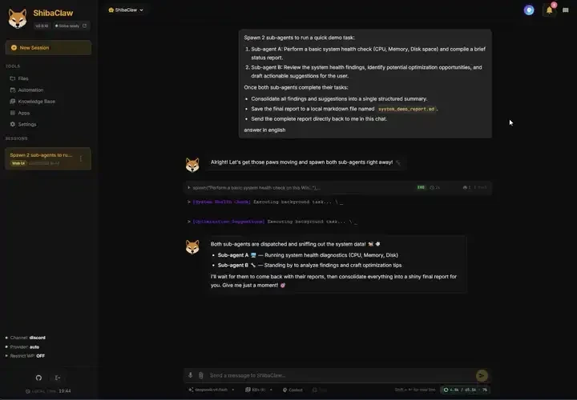
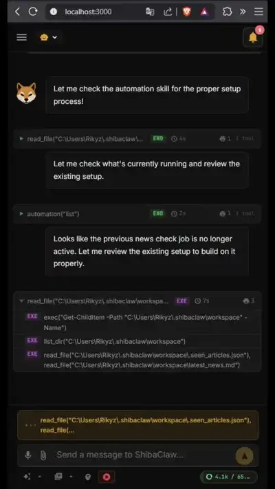

Context that carries forward
Editable long-term memory, session history and reusable skills. Add document retrieval with the optional knowledge base.
PERSONAL AI, SELF-HOSTED
A personal AI agent that runs on your machine or server. Bring local or cloud models to a built-in WebUI, with memory, tools and automations in one place.

Demo could not load. Open the original animation.
01 / THE WORKSPACE
The pieces a personal agent needs, with a UI to manage them.
Compare your requirementsEditable long-term memory, session history and reusable skills. Add document retrieval with the optional knowledge base.
Work with files, shell and web tools. Connect external tools through MCP servers managed in the WebUI.
Run isolated or forked sub-agents for background tasks. Configure project checks to inspect results with real exit codes.
Set one-shot, interval or cron jobs. Use heartbeat tasks to review a task file and decide whether to act.
Use the WebUI or connect messaging channels such as Telegram, Discord, Slack and Matrix.
An encrypted credential vault, workspace restrictions, SSRF filtering and prompt-injection defenses in the runtime.
Read the security boundaries02 / YOUR MODELS
Connect a local LLM through Ollama or another OpenAI-compatible endpoint, or choose a cloud provider. The integration guides cover setup, authentication and current limitations.
Provider eligibility, model support, pricing and usage limits apply. Cloud models receive the context sent to them.

Demo could not load. Open the original animation.
03 / YOUR EVERYDAY SETUP
The Windows installer includes a desktop launcher. The responsive WebUI also works on your phone when you configure access over your LAN.
Keep your deployment authenticated and protect access beyond localhost. Your model, channel and tool choices determine where data is sent.
Windows installation guideSame agent. Same memory and tools.
A layout that fits the screen.
04 / GET STARTED
Install ShibaClaw, connect a model,
then give your agent a task.
A bundled desktop app.
No separate Python installation.
irm https://github.com/RikyZ90/ShibaClaw/releases/latest/download/install.ps1 | iexOr paste the command into PowerShell. It downloads and verifies the same setup. Existing ShibaClaw data is preserved.
Installation & updatesInstall into an isolated Python environment
and start the WebUI with its gateway.
curl -fsSL https://github.com/RikyZ90/ShibaClaw/releases/latest/download/install.sh | bashRequires Python 3.12+. The installer can attempt Python installation on supported systems. Open localhost:3000 after startup.
Installer instructionsRun the gateway and WebUI
with the supplied Compose file.
curl -fsSL https://raw.githubusercontent.com/RikyZ90/ShibaClaw/main/docker-compose.yml -o docker-compose.yml
docker compose up -dRun in your chosen installation directory with Docker Compose installed. Open localhost:3000 and create your admin account.
Docker instructionsUse your Python environment
on Linux, macOS or Windows.
pip install shibaclaw
shibaclaw web --with-gatewayOpen localhost:3000, create your admin account and follow onboarding.
All installation optionsThe software is open source. Model providers, hosted tools and infrastructure may have their own costs.
05 / KEEP EXPLORING
Read the docs, inspect the source,
or find a first contribution.
If ShibaClaw is useful to you, give it a star on GitHub.
It helps other people find the project.